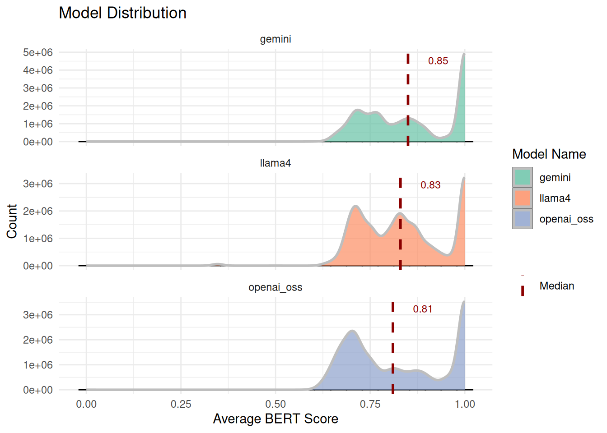

| FEMALE (N=379) |
MALE (N=230) |
Overall (N=609) |
|
|---|---|---|---|
| Age | |||
| 18-44 | 13 (3.4%) | 13 (5.7%) | 26 (4.3%) |
| 45-59 | 65 (17.2%) | 24 (10.4%) | 89 (14.6%) |
| 60-69 | 107 (28.2%) | 63 (27.4%) | 170 (27.9%) |
| 70-79 | 151 (39.8%) | 91 (39.6%) | 242 (39.7%) |
| 80+ | 42 (11.1%) | 38 (16.5%) | 80 (13.1%) |
| Unknown | 1 (0.3%) | 1 (0.4%) | 2 (0.3%) |
| Race | |||
| American Indian or Alaska Native | 2 (0.5%) | 2 (0.9%) | 4 (0.7%) |
| Asian | 118 (31.1%) | 70 (30.4%) | 188 (30.9%) |
| Black or African American | 10 (2.6%) | 6 (2.6%) | 16 (2.6%) |
| Native Hawaiian or Other Pacific Islander | 2 (0.5%) | 2 (0.9%) | 4 (0.7%) |
| Unknown | 35 (9.2%) | 27 (11.7%) | 62 (10.2%) |
| White | 212 (55.9%) | 123 (53.5%) | 335 (55.0%) |
| Ethnicity | |||
| Hispanic or Latino | 34 (9.0%) | 14 (6.1%) | 48 (7.9%) |
| Not Hispanic or Latino | 334 (88.1%) | 208 (90.4%) | 542 (89.0%) |
| Unknown | 11 (2.9%) | 8 (3.5%) | 19 (3.1%) |
AI for Automatic Synoptic Reporting
CAP Forms Description
CAP (College of American Pathologists) forms are standardized cancer reporting protocols that have revolutionized pathology practice by replacing inconsistent narrative reports with structured, synoptic formats containing essential diagnostic and prognostic information. Developed over 35 years ago to address significant variability in cancer reporting, these evidence-based protocols ensure complete, uniform documentation of malignant tumors across all healthcare institutions, directly improving patient outcomes and clinical decision-making.
Lung resection CAP forms are particularly critical in thoracic oncology, providing standardized reporting templates for primary lung cancers that include essential elements such as tumor size, histologic type and grade, surgical margins, lymph node status, and staging classifications. These lung-specific protocols have demonstrated measurable clinical impact, with studies showing that synoptic reporting achieves 88.4% completeness compared to only 2.6% for traditional descriptive reports, leading to more accurate staging, better treatment planning, and improved survival rates.
By establishing consistent terminology and data capture requirements, CAP lung resection forms enhance communication between pathologists and oncologists, ensure regulatory compliance with Commission on Cancer standards, and provide the structured data foundation necessary for personalized cancer care, targeted therapy selection, and multidisciplinary treatment coordination. The widespread adoption of these standardized protocols, supported by electronic integration into laboratory information systems, has positioned pathologists as key members of the lung cancer care team while enabling seamless data exchange for cancer registries, research, and quality improvement initiatives.
CAP Forms Dataset Description
At Stanford, CAP forms were implemented within Epic using SmartForms. SmartForms is an Epic product that allows the capture of semi-structured information within the EHR that can later be used to generate free-form reports. In this case, the structured information from the CAP forms is captured on SmartForms, which later generate the synoptic reporting section within the pathology report. As a consequence, for relevant cases, the pathology report will contain this section.
For this task, we aim to use AI to populate the CAP forms automatically by using all the other elements from the pathology report. We formulated this as a question-answering problem, where the context for each question is the entire pathology report, the question is the particular CAP form element, and the answer is the value/selection to be populated.
For this initial experiment, we collected a dataset with 609 patients and 615 lung resection forms. The forms were reported between November 2022 and March 2025. The table below summarizes the demographics for this dataset. It is important to notice that this a silver standard dataset, since no actual annotations from Pathologist were made to confirm that the rest of the pathology report contained sufficient information to populate the associated CAP form.
Demographic Analysis
Methods and Results
For this experiment, we used several state-of-the-art LLMs to assess their capabilities to extract the information required for lung resection CAP forms. As mentioned before, we formulated the problem as a question-answering problem. The full set of top level questions for the Lung Resection CAP forms alongside the descriptions for each one of them can be found here. Each LLM was tested in a zero-shot setting, where no actual examples were given. Each LLM was asked to answer a single question using the entire pathology report (excluding the synoptic report) and instructions that contained the most recent lung resection CAP forms instructions. We asked the LLMs to provide the answers using JSON to facilitate the parsing of the actual answers. The prompt used can be found here.
To automatically evaluate the output, we used the traditional BERT score, which evaluates the semantic similarity between the generated answer and the reference answer. Distribution of average BERT scores across models is shown below. Histograms with dashed median lines indicate a minor differences in central tendency and variability between models. Summary statistics (mean, median, quartiles) are provided as follow.

Category-Based Evaluation of LLMs
To enable structured evaluation, individual questions from the lung resection CAP forms were grouped into high-level categories based on clinical relevance and reporting conventions. Each category represents a logical grouping of related questions that capture similar aspects of lung resection pathology. This approach allowed us to assess model performance at both the individual-question and category level (e.g., how well LLMs capture margin information overall) and facilitated clearer identification of domains where AI assistance may be most beneficial to pathologists (e.g., strong performance in Margins vs. weaker performance in Histologic Grade). The categories were defined as follow:
Specimen & Procedure
Information about the surgical specimen and procedure, including specimen ID, laterality, and general notes.
- LUNG || SPECIMEN ID(S)
- PROCEDURE
- SPECIMEN LATERALITY
- SYNCHRONOUS TUMORS (REQUIRED IF MORPHOLOGICALLY DISTINCT UNRELATED MULTIPLE PRIMARY TUMORS ARE PRESENT)
- NOTE
Tumor Size, Focality, Distribution
Details on tumor dimensions, number of nodules, total and invasive sizes, focality, and presence of synchronous tumors.
- LUNG || ADDITIONAL DIMENSION (CENTIMETERS)
- LUNG || NUMBER OF INTRAPULMONARY METASTASES
- LUNG || TOTAL NUMBER OF PRIMARY TUMORS
- TOTAL TUMOR SIZE (SIZE OF ENTIRE TUMOR)
- SIZE OF INVASIVE COMPONENT (REQUIRED ONLY IF INVASIVE NONMUCINOUS ADENOCARCINOMAS WITH LEPIDIC COMPO)
- TUMOR FOCALITY
- NUMBER OF TUMOR NODULES
- TUMOR SITE
- PERCENTAGE OF TOTAL TUMOR SIZE (ABOVE)
Tumor Histology & Subtypes
Histologic type, grade, patterns, components, and any descriptive comments from the pathologist.
- HISTOLOGIC TYPE (NOTE A)
- HISTOLOGIC TYPE (NOTE C)
- LUNG || HISTOLOGIC TYPE COMMENT
- HISTOLOGIC GRADE
- HISTOLOGIC PATTERNS (MAY INCLUDE PERCENTAGES)
- HISTOLOGIC COMPONENT(S) PRESENT (MAY INCLUDE PERCENTAGES)
- LUNG || COMMENT(S)
Local Extension & Invasion
Extent of tumor spread, including invasion of adjacent structures, visceral pleura, lymphovascular spaces, and STAS.
- DIRECT INVASION OF OTHER STRUCTURES
- INVOLVED ADJACENT STRUCTURES
- VISCERAL PLEURA INVASION
- LYMPHOVASCULAR INVASION
- LYMPHOVASCULAR INVASION (NOTE F)
- SPREAD THROUGH AIR SPACES (STAS)
Regional Lymph Nodes & Distant Metastisis
Nodal involvement, number of nodes examined and positive, prior lymph node procedures, and extranodal extension.
- DISTANT SITE(S) INVOLVED, IF APPLICABLE
- LUNG || PRIOR LYMPH NODE PROCEDURE(S) INCLUDED
- LUNG || REGIONAL LYMPH NODE COMMENT
- LYMPH NODE(S) FROM PRIOR PROCEDURES
- NUMBER OF LYMPH NODES EXAMINED
- NUMBER OF LYMPH NODES WITH TUMOR
- REGIONAL LYMPH NODE STATUS
- REGIONAL LYMPH NODES
- REGIONAL LYMPH NODES (PN)
- NODAL SITE(S) EXAMINED
- NODAL SITE(S) WITH TUMOR
- EXTRANODAL EXTENSION
Margins
Status and distance of surgical margins (bronchial, vascular, parenchymal, pleural) and comments.
- CLOSEST MARGIN(S) TO INVASIVE CARCINOMA
- DISTANCE FROM INVASIVE CARCINOMA TO CLOSEST MARGIN
- LUNG || MARGIN COMMENT
- MARGIN STATUS FOR INVASIVE CARCINOMA
- MARGIN STATUS FOR NON-INVASIVE TUMOR
- MARGIN(S) INVOLVED BY INVASIVE CARCINOMA
Staging (AJCC/UICC)
AJCC/UICC TNM descriptors and categories (pT, pN, pM) for pathologic staging.
- PRIMARY TUMOR (PT)
- PN CATEGORY
- PM CATEGORY (REQUIRED ONLY IF CONFIRMED PATHOLOGICALLY)
- TNM DESCRIPTORS
Treatment Effect
Evidence of therapy response, including necrosis, viable tumor, and stromal changes.
- TREATMENT EFFECT
- TREATMENT EFFECT (NOTE I)
- PERCENTAGE OF NECROSIS
- PERCENTAGE OF RESIDUAL VIABLE TUMOR
- PERCENTAGE OF STROMA (INCLUDES FIBROSIS AND INFLAMMATION)
Additional Findings
Additional findings and miscellaneous notes not captured in other categories
- ADDITIONAL FINDINGS
Model Performance Across Clinical Categories
The following boxplot displays the distribution of BERT scores across clinical categories, combining data from all three models (OpenAI OSS, Gemini, and LLama4). Categories are sorted by median performance, with the vertical dotted line at 0.85 representing the clinical acceptance threshold. Higher scores (further right) indicate better performance in extracting and structuring the relevant clinical information from pathology reports.
Model Performance by Category
In addition, we assessed model performance across clinical categories using median BERT similarity scores. The following table summarizes median BERT F1-scores for each model across high-level categories. For each category, the model with the highest median score is flagged in the “Best Model” column, highlighting domain-specific strengths. This comparison enables quick identification of areas where models excel and areas where performance is more competitive.
Cross-Model Comparisons Analysis
We evaluated the comparative performance of three large language models (OpenAI OSS, Gemini, and Llama4) across multiple clinical documentation categories, with results presented as vertical bar plots. Each plot depicts category-level performance using color-coded bars: high performance (median BERT score ≥ 0.85), medium performance (0.75–0.84), and low performance (< 0.75). A dotted grey reference line marks the 0.85 threshold, providing a visual benchmark for clinically relevant accuracy.
OpenAI OSS
OpenAI OSS demonstrated the strongest performance, with a majority of categories exceeding the 0.85 threshold. Performance was particularly high in Local Extension and Invasion, Tumor Size, and Margins, suggesting greater robustness in structured oncologic reporting tasks. Overall, OpenAI OSS achieved the highest number of high-performance categories, indicating superior generalizability across clinical contexts.
Gemini
Gemini exhibited more consistent, though less exceptional, performance. The model performed best in Specimen & Procedure and Tumor Size, and Regional Lymph Nodes. While fewer categories reached the ≥ 0.85 threshold compared to OpenAI OSS, Gemini maintained steady medium performance across most categories, reflecting reliability without as many peak performances.
LLama4
LLama4 showed greater variability across categories. While achieving strong results in Specimen and Procedure, it underperformed relative to the other models, with more categories falling below the 0.75 threshold. These results suggest LLama4 may be more sensitive to domain-specific nuances rather than broadly adaptable.
Several trends emerged across models. All models struggled with Tumor Histology and Staging, indicating this category may represent a systematic challenge in clinical text modeling. Conversely, categories with the highest performance were largely consistent across models, reinforcing reproducibility of strengths across architectures. Taken together, a performance hierarchy was evident: OpenAI OSS > Gemini > LLama4.
Summary
In this evaluation we only use 3 models vs the 5 presented before. We choose to use the open source version of GPT to favor open source models with more recent data cuts. It has been shown that this model is particularly good at health related tasks. All models were use through Google Cloud using their Vertex AI HIPAA compliant deployments and endpoints. The models endpoints used were: openai/gpt-oss-20b-maas for OpenAI OSS, gemini-2.5-flash for the latest Gemini model and meta/llama-4-scout-17b-16e-instruct-maas for the latest LLAMA model.
Across the nine categories, OpenAI OSS achieved the highest overall success rate (56%), most frequently exceeding the 0.85 threshold. In contrast, Gemini demonstrated consistent performance across categories, ranking highest in Specimen & Procedure, and Staging compared to the other models. Llama4 showed more balanced but slightly weaker results overall.
Taken together, OpenAI OSS appears strongest in terms of peak performance across domains, while Gemini offers steadier and broader consistency even if some medians fell below the threshhold, and Llama4 provides competitive performance in select categories.
Lastly, we piloted an LLM-as-a-Judge experiment to assess whether model-generated answers aligned with CAP form reference answers. While promising, this approach requires further refinement and validation with expert pathologist annotations before it can be considered an objective and reliable measure of performance.